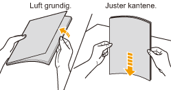

Utskrift på transparenter
Bekrefte transparenter som kan brukes
Denne skriveren kan bruke følgende transparentstørrelser.
|
Standardstørrelser
|
A4, Letter
|
Legge i transparenter
Du kan legge transparenter i flerfunksjonsskuffen.
<Forholdsregler ved bruk av transparenter>
Luft transparentene grundig og juster deretter kantene før de legges i, siden de kan feste seg til hverandre. Hvis de ikke er luftet nok vil flere papirark mates samtidig og føre til papirstopp.

Ved lufting eller innretting av transparentene, prøv å hold i kantene for å unngå å ta på utskriftsoverflaten.
Pass på å ikke sette igjen merker eller skitt på utskriftsoverflaten til transparentene med fingeravtrykk, støv eller olje. Dette kan føre til dårlig utskriftskvalitet.
Skrive ut fra et program
Etter å ha lagt i transparenter, utfør utskrift.